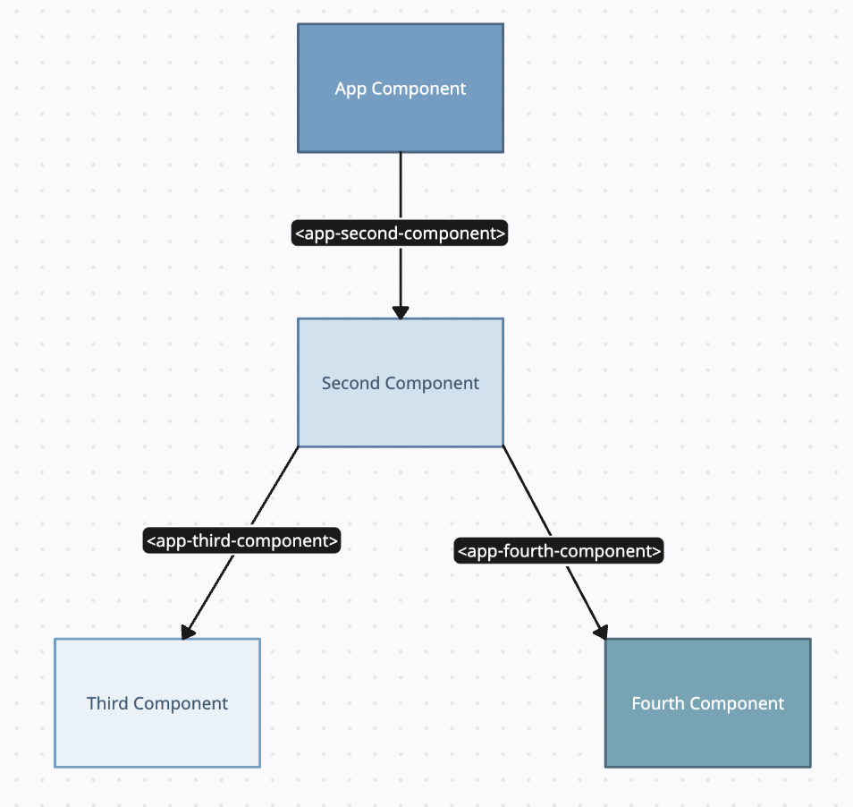
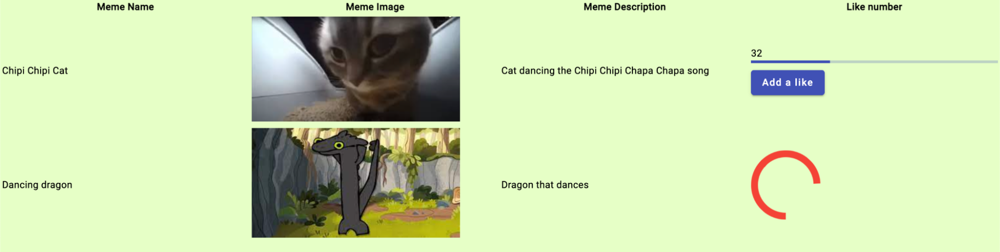

Esercizio 3
Realizza una pagina Angular come in figura.
I meme possono essere scelti a piacere, purché non siano cose oscene!
- Crea un’applicazione Angular chiamata esercizio-3
- Crea 3 componenti oltre all’app component
- Usa la stessa struttura dei componenti che vedi nel grafico ad albero
- Il second component deve contenere la tabella
- Usa la notazione {{ }} per recuperare il nome e la descrizione dei meme, contenute all’interno di variabili definite nel file component.ts.
Le variabili devono essere contenute dentro un array. - Il third component deve contenere il numero di like del primo meme, una barra e un bottone.
- Il numero deve essere inizializzato dal costruttore del componente e deve essere scelto a caso tra 0 e 100.
- La barra deve essere riempita in modo congruo al numero di like.
- Il pulsante deve aggiungere un like. Il numero massimo di like è 100.
- Il fourth component deve contenere un icona di caricamento di angular material.
- Le immagini devono essere adeguatamente ridimensionate usando il css.
- Usa i css per colorare l’immagine come nella figura
- Aggiungere il seguente comportamento al third component:
- Se il numero di like è minore di 33, la barra e il tasto devono essere colorati di blu (primary)
- Se il numero di like è maggiore o uguale a 33 e minore di 66, la barra e il tasto devono essere colorati di rosa (accent)
- Negli altri casi, la barra e il tasto devono essere colorati di rosso (warn)
[ Link utili ]
https://developer.mozilla.org/en-US/docs/Web/JavaScript/Reference/Global_Objects/Math
(Libreria matematica di JavaScript… funziona anche in TypeScript)
https://www.freecodecamp.org/news/javascript-array-of-objects-tutorial-how-to-create-update-and-loop-through-objects-using-js-array-methods/
(Array di oggetti in Javascript e Typescript)
